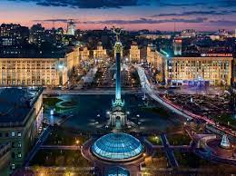
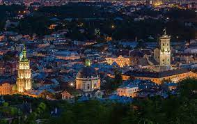
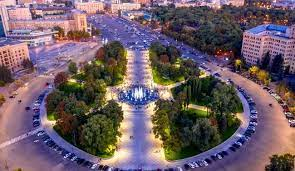
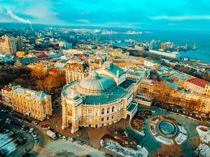
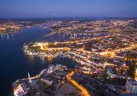

Україна: країна з багатою культурою та неповторними містами
Україна - це країна з великою кількістю унікальних міст, які привертають увагу туристів з усього світу. Кожне місто має свою власну історію, культуру і традиції, що робить їх неповторними та цікавими для вивчення та відвідування.
Одним з найвідоміших міст України є Київ - столиця країни. Київ відомий своїми історичними пам'ятками, такими як Софійський собор, Печерська Лавра та Золоті ворота. Крім того, в Києві можна знайти безліч музеїв, театрів, ресторанів та інших розважальних закладів, які пропонують багато цікавих можливостей для відпочинку.
Ще одним популярним містом серед туристів є Львів. Це місто вражає своєю архітектурою, вуличними кав'ярнями та атмосферою старовинного міста. У Львові можна відвідати Львівську оперу, Личаківський цвинтар, Ратушу та інші цікаві місця. Також варто зазначити, що Львів відомий своєю кухнею, яка є невід'ємною частиною подорожі до цього міста.
Іншим важливим містом в Україні є Харків. Це місто відоме своїми парками, площами та архітектурою у стилі соцреалізму. У Харкові можна відвідати Державний музей історії Харкова, парк Горького, Майдан Свободи та інші визначні місця.
До інших цікавих міст України можна віднести Одесу з її приморським шармом, Дніпро з Дніпровськими кручами та Нікополь зі своєю багатою історією. Кожне з цих міст має свої унікальні особливості та привабливості для відвідувачів.
Також цікавих міст України можна віднести Севастополь з її відомими своїми оборонними спорудами, зокрема фортецею Чорна гора, яка мала важливе стратегічне значення протягом багатьох століть.
Україна - це країна з багатою культурною спадщиною та неповторними містами, які варто відвідати, щоб насолодитися їхньою красою, історією та гостинністю місцевих жителів.
Київ
Київ, столиця України, є одним з найбільших та найважливіших міст країни. Це давнє місто з багатою історією, глибокими традиціями та неповторною атмосферою, яка привертає тисячі туристів з усього світу кожного року.
Однією з головних визначних пам'яток Києва є Софійський собор, який є символом міста. Цей давній храм датується XI століттям і входить до списку об'єктів світової спадщини ЮНЕСКО. Собор славиться своєю унікальною архітектурою та золотими куполами, а також є важливим центром духовної культури для православних християн.
Ще одним символом Києва є Печерська Лавра, монастирський комплекс, заснований у XI столітті. Лавра відома своїми церквами, підземними печерами та колекціями ікон із давніх часів. Це місце привертає паломників та туристів, які бажають зануритися в давню духовність та історію України.
Крім історичних пам'яток, Київ вражає своєю культурною різноманітністю. Тут можна знайти безліч музеїв, галерей, театрів та концертних залів, де представлені як українські, так і світові мистецькі твори. Місто також славиться своєю кухнею, яка поєднує традиційні українські страви з впливами інших кухонь світу.
Київ також відомий своїми парками та зеленими зонами, де можна відпочити від міської суєти та насолодитися природними красами. Парки, такі як Пейзажна Алея, Феофанія, Гідропарк та інші, стали популярними місцями для відпочинку киян та гостей міста.
Усі ці аспекти роблять Київ привабливим напрямком для подорожей для тих, хто цікавиться історією, культурою, мистецтвом та природою. Київ - це місто, яке не залишить байдужим жодного відвідувача і залишить незабутні враження про Україну.
Львів
Львів, розташований на заході України, є одним із найвідоміших та найпривабливіших міст країни. Це місто з багатою історією, глибокими традиціями та вражаючою архітектурою, яка відображає багатство культурного спадку українського народу.
Однією з найвизначніших пам'яток Львова є Львівська оперна будівля, яка відома своєю величною архітектурою та видатними оперними виставами. Кожного року сотні тисяч туристів та любителів мистецтва відвідують цю оперну будівлю, щоб насолодитися виставами відомих оперних театрів світу.
Також Львів славиться своїми історичними площами та вулицями, які переповнені давніми будівлями, чудовими кафе та ресторанами. Ратушна площа є однією з центральних площ міста, де можна побачити Ратушу, чарівний фонтан Нептуна та інші архітектурні перлини.
Ще однією визначною пам'яткою Львова є Личаківський цвинтар, який відомий своєю історією та архітектурою. Це місце є останнім спочинком багатьох видатних українців, польських поетів, художників та інших видатних особистостей. Личаківський цвинтар також є музеєм під відкритим небом, де можна побачити чудові пам'ятники та скульптури.
Львів також славиться своєю культурною активністю, оскільки місто є центром театрального, музичного та літературного життя. Тут можна знайти безліч музеїв, галерей, літературних кав'ярень та фестивалів, які привертають увагу як місцевих жителів, так і гостей міста.
Усі ці аспекти роблять Львів привабливим для подорожей та відпочинку для тих, хто цінує культурну спадщину, мистецтво та атмосферу старовинного міста. Львів - це місто, яке не залишить байдужим жодного відвідувача та залишить незабутні враження про культурне розмаїття України.
Харків
Харків, розташований на сході України, є одним з найбільших та найбільш важливих міст країни. Це місто славиться своєю багатою історією, культурною спадщиною та динамічним розвитком у галузі науки, освіти та технологій.
Однією з головних визначних пам'яток Харкова є Площа Свободи, центральна площа міста, де можна побачити архітектурні перлини, такі як Державний академічний оперний театр, будівля Харківського університету та інші історичні споруди. Площа Свободи є серцем міста, де люди збираються, щоб насолодитися культурними подіями та святами.
Харків також славиться своєю архітектурою у стилі соцреалізму, яка є характерною для багатьох будівель у місті, зокрема Харківський національний університет міського господарства, залізничний вокзал та багато інших. Ці будівлі стали своєрідним символом міста та його історичної спадщини.
Крім історичних та архітектурних пам'яток, Харків відомий своїми парками та зеленими зонами. Парк Горького, який розташований у центрі міста, є популярним місцем для відпочинку та прогулянок серед місцевих жителів та туристів. Тут можна зустріти багато спортивних та культурних подій, виставок та фестивалів.
Харків також відомий своїми вищими навчальними закладами, такими як Харківський національний університет імені В. Н. Каразіна, Харківський політехнічний інститут та інші. Місто є важливим освітнім центром України, де зосереджені великі навчальні ресурси та наукові досягнення.
Усі ці фактори роблять Харків привабливим для подорожей та життя для тих, хто цінує культуру, історію, науку та технології. Місто поєднує в собі традиційні цінності з сучасним розвитком, створюючи неповторну атмосферу енергії та творчості.
Одеса
Одеса, розташована на узбережжі Чорного моря на південь від України, є одним з найвідоміших міст країни, відомим своїм морським шармом, багатою культурою та неповторною атмосферою.
Починаючи зі свого головного символу - Приморського бульвару, Одеса вражає своїм унікальним архітектурним стилем, який поєднує в собі класичні європейські будівлі, морський флот та сучасний комфорт. Приморський бульвар є популярним місцем для прогулянок, вечірніх розваг та насолоди морським бризом.
Одеса славиться також своїми мальовничими пляжами, які є улюбленим місцем для відпочинку місцевих мешканців та туристів влітку. Пляжі Аркадія, Ланжерон та Золотий Берег пропонують відмінні умови для купання, водних розваг та пікніків з видом на море.
Крім природних крас Одеса вражає своїми культурними та історичними пам'ятками. Одеський Оперний театр, який є одним з найбільших в Україні та одним із найпрекрасніших в Європі, служить центром оперних та балетних вистав. Також варто відвідати Дерибасівську вулицю, яка є серцем історичного центру Одеси зі своїми кафе, ресторанами та атмосферою старовинного міста.
Одеса також відома своєю багатою культурною програмою, яка включає музеї, галереї, театри та фестивалі. Одеський літературний музей, Музей морського флоту та Одеський художній музей - лише кілька із численних закладів, які дозволяють ознайомитися з багатою історією та культурою міста.
Завдяки своїй унікальній атмосфері, культурному розмаїттю та мальовничому узбережжю Одеса приваблює туристів з усього світу, які шукають яскраві враження, культурні події та незабутні відпочинок біля моря.
Севастополь
Севастополь - це одне з найвідоміших українських міст, розташоване на півдні Криму, на узбережжі Чорного моря. Це місто вражає своєю красою природних ландшафтів, багатою історією та унікальним культурним спадщинням.
Однією з найвідоміших пам'яток Севастополя є Херсонес Таврійський - давньогрецьке місто, яке стало символом міста та його історичної спадщини. Тут можна побачити руїни давніх храмів, театр, акведук та інші архітектурні споруди, що свідчать про давній розквіт цього міста.
Севастополь також відомий своїми оборонними спорудами, зокрема фортецею Чорна гора, яка мала важливе стратегічне значення протягом багатьох століть. Ці оборонні споруди є важливими пам'ятками історії міста та варто відвідати, щоб поглибити знання про військову історію цієї області.
Найбільш відомий епізод історії Севастополя - це облога міста під час Кримської війни 1854-1855 років, коли місто стало символом героїзму та відваги російських військових. Сьогодні місто зберігає пам'ять про ці події через багато музеїв, пам'ятники та меморіали, які присвячені подвигу оборонців Севастополя.
Крім історичних пам'яток, Севастополь приваблює туристів своїм прекрасним пляжами, мальовничими краєвидами та багатою культурною програмою. Тут можна насолодитися морськими прогулянками, відвідати місцеві ресторани та кафе з національною кухнею, а також ознайомитися з сучасними та традиційними видами мистецтва у місцевих галереях та музеях.
Усе це робить Севастополь привабливим напрямком для подорожей як для історико-культурних екскурсій, так і для спокійного відпочинку на березі моря в атмосфері унікальної історії та культури.